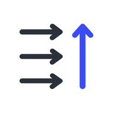
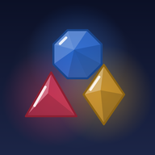

Bomerd
Calm puzzle games for your phone.
Games

Okyay
A quiet puzzle game about clearing a board of arrows.
Every arrow points somewhere. Tap one whose path to the edge is clear and it slides away, opening a route for the next. Clear the board.
New puzzle every day. No account, no timer, no pressure.

Shard Kingdom: Color Defense
Tap the right color to shatter the glass before it reaches your wall.
Glass crystals march down the road toward your tower, each a stack of gems of one color. Tap a color and your gun fires it at the closest crystal of that color; when a color runs dry, the Keeper runs to refill it. Fire the right colors and the glass shatters.
60 levels across six worlds. No account needed, it plays offline, and its ads are few: a short one as each new world opens, and ones you choose to watch for a reward. The Shop has optional packs and unique outfits.
Support
Questions, bugs or ideas: bomerrd@gmail.com